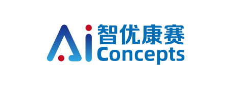
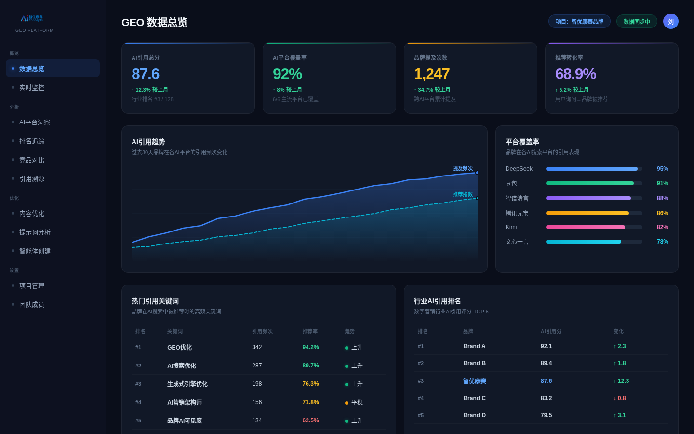
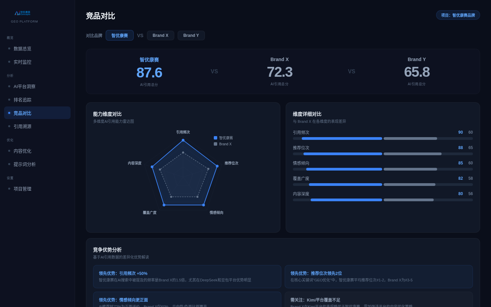

AI 平台答案追踪
围绕 DeepSeek、豆包、通义千问、文心一言、Kimi 等国内高频 AI 入口，持续追踪品牌出现率与推荐顺位。

联系我们智优康赛把监测、解析、归因、内容优化和效果复盘打通，帮助企业持续理解 AI 如何谈论品牌，并把答案页中的机会转化为可执行动作。

围绕 DeepSeek、豆包、通义千问、文心一言、Kimi 等国内高频 AI 入口，持续追踪品牌出现率与推荐顺位。
识别 AI 回答背后的高权重信源、内容结构和语义关联，定位最值得优先治理的位置。
把 FAQ、对比、榜单、案例和专家背书重构为更容易被模型理解、引用和推荐的内容资产。

量化品牌在不同平台、问题、场景中的出现率、推荐位和语义归因。
将异常回答、负面倾向和事实偏差纳入预警与修正流程。
让策略不是一次性报告，而是持续迭代、持续验证的运营系统。